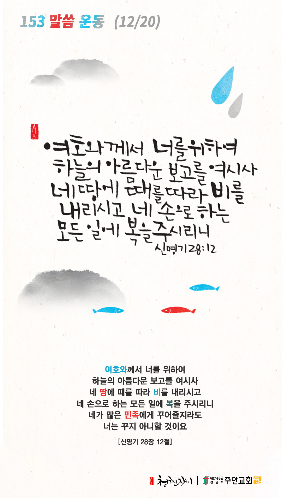

온라인 기도실 안내
2020년 12월20일(일)~12월26일(토)
- 온라인 기도실은 온 회중이 함께 하나님께 나아가는 자리입니다
- 30분 정도 여유를 가지고 하시길 바랍니다
- 말씀과 묵상, 찬양과 기도로 함께 합니다
- 배경 음악이 나올 수 있습니다 볼륨을 조절해주세요
준비가 되셨으면 아래의 버튼을 눌러주세요
찬양, 주의 성실을 찬양하리이다
(시71:22)
- 가사를 묵상하며 읽습니다
어둠 속 헤매이던 내 영혼
갈길 몰라 방황할 때에
주의 십자가 영광의 그 빛이
나를 향해 비추어주셨네
주홍빛보다 더 붉은 내 죄
그리스도의 피로 씻기어
완전한 사랑 주님의 은혜로
새 생명 주께 얻었네
은혜 아니면 나 서지 못하네
십자가의 그 사랑 능력 아니면
나 서지 못하네
은혜 아니면 나 서지 못하네
놀라운 사랑 그 은혜 아니면
나 서지 못하네
찬양, 주의 성실을 찬양하리이다
(시71:22)
- 가사를 묵상하며 읽습니다
나의 노력과 의지가 아닌
오직 주님의 그 뜻 안에서
의로운 자라 내게 말씀하셨네
완전하신 그 은혜로
은혜 아니면 나 서지 못하네
십자가의 그 사랑 능력 아니면
나 서지 못하네
은혜 아니면 나 서지 못하네
완전한 사랑 그 은혜 아니면
나 서지 못하네
찬양, 주의 성실을 찬양하리이다
(시71:22)
- 가사를 묵상하며 읽습니다
이제 나 사는 것 아니요
오직 예수 내 안에 살아 계시니
나의 능력 아닌 주의 능력으로
이제 주와 함께 살리라
오직 은혜로 나 살아가리라
십자가의 그 사랑
주의 능력으로 나는 서리라
주의 은혜로 나 살아가리라
십자가 사랑 그 능력으로
나 살리라 주 은혜로 나 살리라
찬양, 주의 성실을 찬양하리이다
(시71:22)
은혜 아니면 by Acts29 연예인합창단
위의 찬양이 끝나면 말씀읽기를 눌러주시면 됩니다
말씀하옵소서, 주의 종이 듣겠나이다
(삼상3:10)
오늘의 말씀입니다
음악 소리가 크면 조절하시기 바랍니다
"날마다 숨쉬는 순간마다" 편곡 및 연주 by 이지선

마음의 묵상
(신 28:12)
“여호와께서 너를 위하여 하늘의 아름다운 보고를 여시사 네 땅에 때를 따라 비를 내리시고 네 손으로 하는 모든 일에 복을 주시리니 네가 많은 민족에게 꾸어줄지라도 너는 꾸지 아니할 것이요”
1. 하나님께서 은혜와 복 주시는 이심을 신뢰하시나요?
2. 하나님께서 우리에게 어떤 복들을 주시겠다고 말씀하시나요?
3. “하늘의 아름다운 보고”에서 진정한 복이 흘러나옴을 묵상해보세요
하늘의 보고를 사모합니다
회개, 삶의 방향을 바꾸는 결정
회개할 것이 없는 사람은 없습니다
“사람의 행위가 자기 보기에는 모두 깨끗하여도 여호와는 심령을 감찰하시느니라”
- 잠언 16장2절 -
3분 정도 회개하며 주님 앞에 나아갑니다
내 중심이 주를 간절히 구하오리니
(사26:9)
- 다음의 말씀을 소리 내어 읽습니다
"주께서는 제사를 기뻐하지 아니하시나니 그렇지 아니하면 내가 드렸을 것이라 주는 번제를 기뻐하지 아니하시나이다 하나님께서 구하시는 제사는 상한 심령이라 하나님이여 상하고 통회하는 마음을 주께서 멸시하지 아니하시리이다"
- 시편 51장 16-17절 -
하나님 나라
1. 하나님의 나라가 속히 이 땅에 임하게 하소서
하나님 아버지, 복된 성탄절에 온 인류의 구원을 위하여 오신 예수님을 세상 모든 사람들이 영접하게 하시고,
사탄의 세력이 더 이상 인류를 질병과 재난과 전쟁으로 공격하지 못하게 막아주소서.
간절한 마음으로 3분 정도 기도합시다
남과 북
2. 남북한이 속히 복음으로 통일되게 하소서
하나님 아버지, 공산주의 독재 정권 하에 신음하고 있는 북한 동포들을 불쌍히 여기사
이제 저들의 신음소리를 들으시고 신앙의 자유와 참 해방을 허락하여 주옵소서.
그리고 한반도에 하나님의 샬롬이 이루어지게 역사하소서.
간절한 마음으로 3분 정도 기도합시다
대한민국
3. 우리나라가 하나님을 경외하는 나라가 되게 하소서
하나님 아버지, 우리 민족이 하나님을 경외하는 민족이 되게 하시고,
대통령부터 나라의 모든 위정자들이 참으로 겸손하게 백성들을 섬기며,
존경받는 지도자들이 되게 하소서.
간절한 마음으로 3분 정도 기도합시다
한국교회
4. 한국교회가 성령으로 새롭게 부흥되게 하소서
하나님 아버지, 한국교회가 복된 성탄의 계절에 벼랑 끝에 서 있는 수 많은 소외된 이웃을 돌아보게 하시고,
교회가 예수님의 손과 발이 되어 그들을 사랑으로 섬기게 하소서.
간절한 마음으로 3분 정도 기도합시다
주안교회
5. 주안교회가 선교적 삶으로 세상을 섬기고 치유하게 하소서
하나님 아버지, 주안의 성도들이 경건한 두려움으로 다시 오실 주님을 맞이할 준비를 하게 하시고,
헛된 마음 버리고 오직 주님만을 나의 왕, 나의 구주로 섬기며 충성을 다하게 하소서.
간절한 마음으로 3분 정도 기도합시다
감사의 기도
- 오늘 기도를 인도하신 주님께 감사를 올려드립니다
- 아래의 구절을 읽고 주님께 감사의 마음을 올려드립시다
“기도를 계속하고 기도에 감사함으로 깨어 있으라”
- 골로새서 4장 2절 -
고요한 가운데 잠시 침묵하시기 바랍니다
파송, 세상을 향하여
- 오늘의 온라인 기도를 마쳤습니다
기도를 들으신 주님께서 평안히 가라 하십니다
주님께서 우리와 함께 하시니 두려울 것이 없습니다
새벽을 깨우며
- 새벽기도회 안내입니다